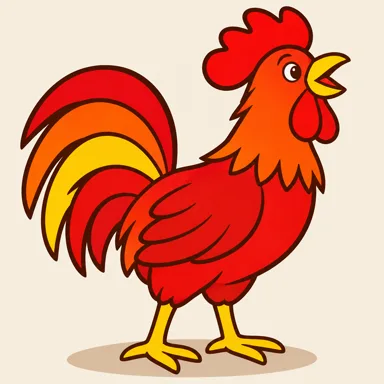

Les cartes sont posées à l'envers. Chaque image est sur deux cartes. Pour gagner, retrouvez toutes les paires.

Une partie se gagne toujours. Le défi est d'y arriver en peu de coups.
Cliquez sur une carte pour la retourner, puis sur une deuxième.
Si les deux images sont pareilles, c'est une paire : les cartes restent visibles, avec une coche verte.
Sinon, elles se retournent au bout de quelques secondes, ou dès votre clic suivant. Retenez bien leur place.
« Aide » encadre une carte à retourner. Si vous avez déjà vu deux images pareilles, il vous les montre.
« Nouvelle partie » vous permet de choisir le niveau : 6, 10 ou 15 paires. La partie est enregistrée à chaque carte.